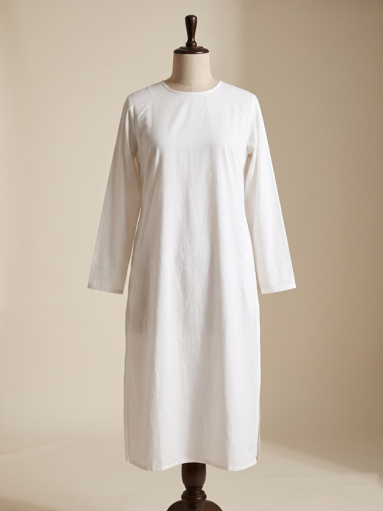

Sage Embroidered Organza
Pearl Guipure Lace
01 · Textile
Original
Plain white toile
Sage Organza
Floral embroidery
02 · Pearl Guipure Lace
Neckline
Sleeve Cuffs
Hem Border
Chaak Slits
03 · Test
Grain checker
Show photo only